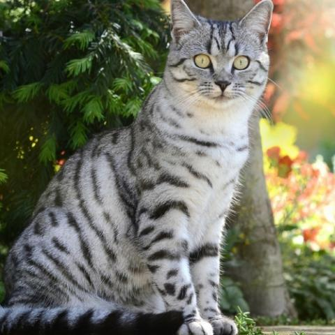
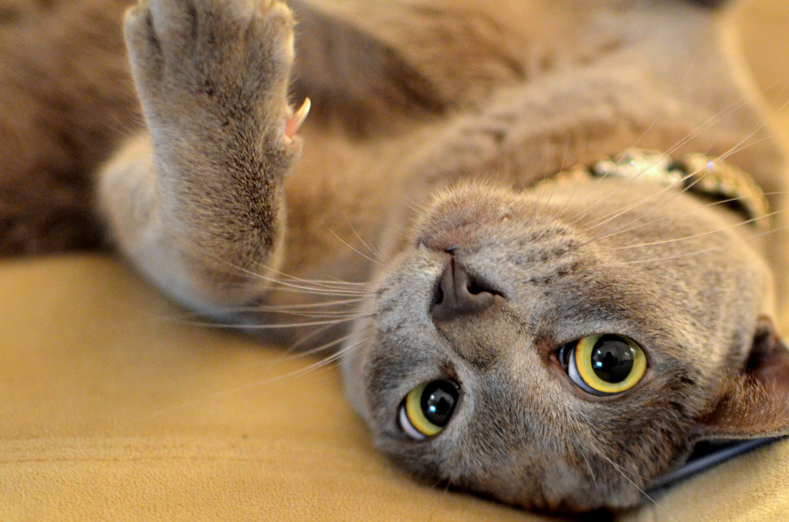
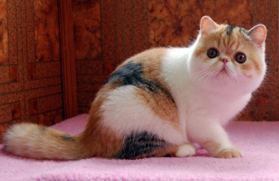

We rescue cats that are in need of help. If you find a fuzzy little creater in danger call us at 889-909-8485. You can also reach us at our email eliskdjfher@jkamo.com

This here is Andrew. We rescued him as he was dehdrated and left out in the hot sun. He is an American Shorthair, and we are proud to say he is with a loving family that takes care of him.

This is Jack, he once was scard and didn't trust anyone. We believed he was abused, for we found him locked in a cage by a busy highway. He was severaly unnourished and could barley move. He is now healthy and more friendly towards people. I believe one day he will be welcomed by a family with open arms.

Another little cutie we have is Nibs here. She was found in a bag, his fur was matted. She was in much worse condition then Andrew and Jack. We didn't beleive that she would make it, but she stood strong and now she is health. Although she seems not to be a little scarce at times.